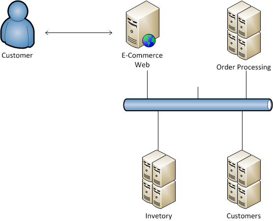

NServiceBus
Uses
Agenda
Overview
Uses
Questions / Discussion
Overview
Service Oriented Architecture
Is a logical representation of a repeatable business activity that has a specified outcome (e.g., check customer credit, provide weather data, consolidate drilling reports)
Is self-contained
May be composed of other services
Is a “black box” to consumers of the service

Business Process Orchestration
Long running business processing = Sagas
Abstracts Busing Technologies
MSMQ
Rabbit MQ
IBM MQ
More...
Team's Standards
Collective Code Ownership
Automated Testing
Automated Deployment
This is NOT a distributor model.
Uses
Offline Reporting
GIPS
Returns Web
Platinum Reporting
CARS
Offline Data Processing
Public Site
GIPS
Returns Web
Platinum Reporting
File Processing
CARS
ETF Indexes
Morning Star
SOA with Domain Events
Future State - VPM
Questions / Discussion